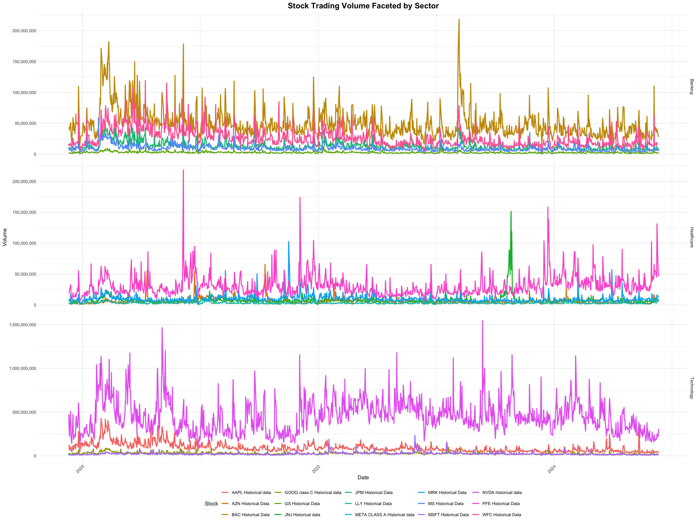
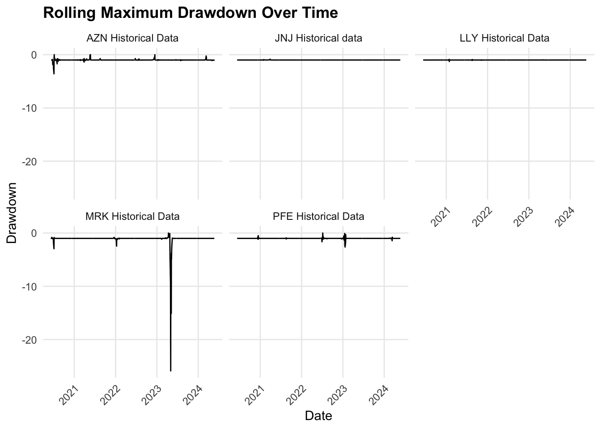
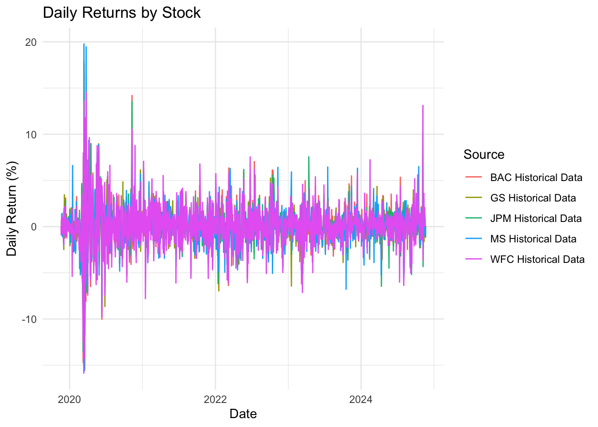
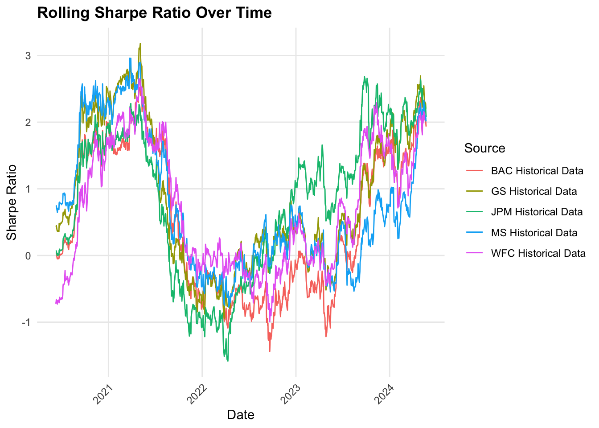
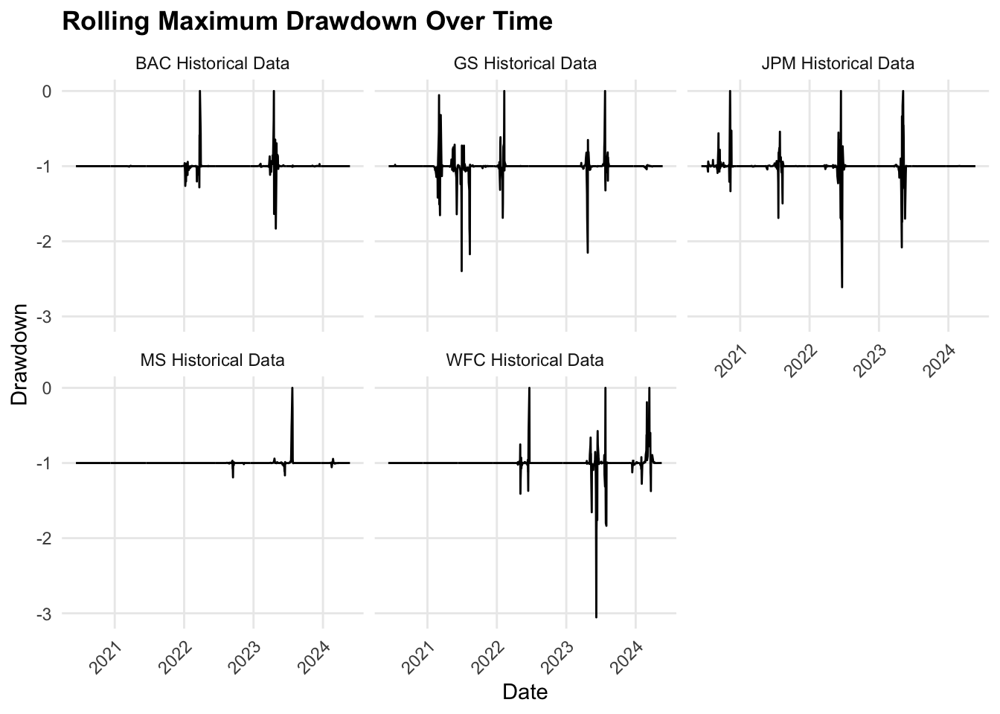
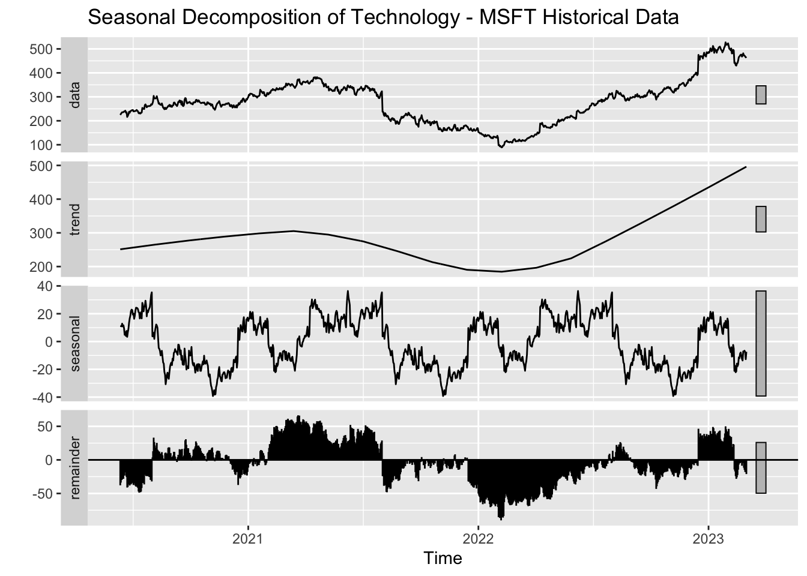

This section presents the key findings from our sector-based financial analysis of Technology, Healthcare, and Banking stocks listed on NASDAQ over the past five years. Our analysis reveals distinct performance patterns, risk profiles, and sensitivities to economic indicators across the sectors. Notably, the Technology sector demonstrated robust growth and resilience, while the Banking sector exhibited higher volatility influenced by interest rate fluctuations. This project aims to explore the performance of stocks across 3 sectors and find out which stock is a safer bet i.e, less risk but there is also less profit and which one will generate more profit. We would like to establish the fact that this project does not aim to provide financial advice. To obtain the goal, we have to start somewhere. So, first, we have analysed the closing price and trading volume of each stock in each sector. The dataset spans over 5 years from 2019 to 2020.
4.2 1. Stock Performances on each sector
4.2.1 1.1 Closing Price
Code
library(ggplot2)library(dplyr)
Attaching package: 'dplyr'
The following objects are masked from 'package:stats':
filter, lag
The following objects are masked from 'package:base':
intersect, setdiff, setequal, union
Code
library(readr)library(tidyr)library(lubridate)
Attaching package: 'lubridate'
The following objects are masked from 'package:base':
date, intersect, setdiff, union
Code
library(zoo)
Attaching package: 'zoo'
The following objects are masked from 'package:base':
as.Date, as.Date.numeric
Warning: Using `size` aesthetic for lines was deprecated in ggplot2 3.4.0.
ℹ Please use `linewidth` instead.
Code
print(p)
Tech stocks are showing pronounced growth over time due to the investors’ belief of growth in technology. Particularly for Nvidia, there is a significant increase. In healthcare, Eli Lilly is exhibiting a steady growth although not as steep as Technology. There is a slower but stable upward trend in the banking sector. This could be attributed to various reasons. One being the restrictions and regulations that the banking sectors must adhere to which limits their rapid expansion. The other one might be their focus on mature markets rather than younger ones. Unlike Tech and some healthcare companies, the banks look for stability over innovation. They might require stable economic growth and there are very few growth opportunities in a mature market. We have stated a few reasons as to why the slower increase is seen, but there are various other reasons as well.
Now, let’s move on to Opening prices. Opening price is the first trading price of a stock on a particular date. We did plot a graph for it but we haven’t included it because it yields a similar conclusion as closing price. This could be because of broader market conditions or sector-specific factors as well. One such reason is the Efficient Market Hypothesis(EMH) which states that share prices reflect all the information available. Meaning, all the changes that happened overnight when the market was closed is being reflected in the opening price for the next day. So, there is little to improve throughout the day unless something huge happens in the middle of the day for the market to crash.
4.3 Trade Volume
Moving on to the next phase of our analysis: Trading Volumes. This step is crucial as it sets the tone for our subsequent analysis focused on events.
Code
p <-ggplot(combined_data, aes(x = date, y = volume, color = Stock)) +geom_line(size =1) +facet_grid(Sector ~ ., scales ="free_y") +labs(title ="Stock Trading Volume Faceted by Sector",x ="Date",y ="Volume",color ="Stock" ) +scale_y_continuous(labels = scales::comma) +theme_minimal() +theme(plot.title =element_text(hjust =0.5, size =16, face ="bold"),axis.text.x =element_text(angle =45, hjust =1),legend.position ="bottom" )print(p)

We see some interesting patterns here. It highlights investor patterns and market interests. There are significant spikes in the volume of META and NVDA, this indicates heightened investor interests during certain periods. We will specifically focus on NVDA because we are seeing very intriguing trends. Nvidia was always a leader in the GPU market. With its integration of AI, it has set the industry standard. After the hit of COVID-19, companies announced work-from-home policies, and educational institutions shifted to online learning. There was huge demand for PCs. This meant, GPUs. From Source),), we find that Nvidia increased their GPU shares from 69.19% in Q1 to 80% in Q2. This indicates the surges in their trading volume in 2020.Then came the AI boom, driving Nvidia stocks to an all-time high. Now it is considered to be one of the world’s richest countries.
Yet again, the banking sector shows a smaller growth. This could be attributed to major geopolitical events and the pandemic. Since banking sectors look for economic stability more, they are one of the first ones to get hit. Therefore, there isn’t much growth in their trading volume.
When it comes to healthcare, AZN, PFE and MRK display smaller growths, but ELY and JNJ show major peaks in 2020 and 2022. In 2020, it could be attributed to the demand for vaccines and ELY and JNJ are in the forefront of healthcare and medtech. This is to be expected in 2020 because while other sectors are facing losses, healthcare benefits the most because of the demand for vaccines and medicines.
To summarise: Tech - Higher closing price and trading volumes indicates their volatility yet higher-growth nature. Healthcare - Steady rise in stock prices indicate investor’s confidence with occasional volume surges based on specific events Banking - Conservative price changes and volume indicate the sector’s stable nature.
4.4 2. Stock Analysis By Events
Now, let’s focus on how each event has impacted the stocks. We have plotted an interactive graph for each sector using Plotly so that the users can select which period to focus on. We have excluded the banking sector because it has already been established that whenever there is any economical instability, there won’t be much growth in the banking sector. Unless it is as interesting as the credit crisis, we felt that it isn’t worth showing and would turn out to be redundant for our end goal. We are focusing on 7 major events: 2019-04-15 - Notre-Dame Fire 2020-03-11 - Covid-19 declared 2020-12-14 - Vaccine rollout begins 2021-01-06 - Capitol Riot 2022-02-24 - Russia Invades Ukraine 2023-10-07 - Israel-Hamas Conflict 2024-11-05 - 2025 Presidential Election
The following object is masked from 'package:ggplot2':
last_plot
The following object is masked from 'package:stats':
filter
The following object is masked from 'package:graphics':
layout
Code
library(zoo)# Extract stock names from the Source column and pivot the datawide_data <- health_data |>mutate(Stock =sub(" Historical data", "", Source)) |>select(date, close, Stock) |>pivot_wider(names_from = Stock, values_from = close) |>arrange(date)# Fill missing values using linear interpolationwide_data <- wide_data |>mutate(across(-date, ~na.approx(.x, na.rm =FALSE)))events <-data.frame(date =as.Date(c("2019-04-15", "2020-03-11", "2020-12-14", "2021-01-06", "2022-02-24", "2023-10-07", "2024-11-05")),event =c("Notre-Dame Fire", "COVID-19 Declared", "Vaccine Rollout Begins", "Capitol Riot", "Russia Invades Ukraine", "Israel-Hamas Conflict", "2024 Presidential Election"),stringsAsFactors =FALSE)analyze_event_impact <-function(stock_data, event_date) { event_date <-as.Date(event_date) pre_event_date <- event_date -days(3) post_event_date <- event_date +days(3) relevant_prices <- stock_data |>filter(date >= pre_event_date & date <= post_event_date) stock_columns <-setdiff(names(relevant_prices), "date") returns <- relevant_prices |>mutate(across(all_of(stock_columns), ~ (.x /lag(.x) -1) *100, .names ="{.col}_return")) |>mutate(event_date = event_date)return(returns)}impact_results <- events |>rowwise() |>do(analyze_event_impact(wide_data, .$date)) |>ungroup()results_df <-bind_rows(impact_results)# Remove rows with all NA values in return columnsresults_df <- results_df |>filter(if_any(ends_with("_return"), ~!is.na(.)))# Prepare data for plottingplot_data <- results_df |>pivot_longer(cols =ends_with("_return"), names_to ="Stock", values_to ="Return",names_pattern ="(.+)_return" ) |>filter(!is.na(Return))plot <-plot_ly()# Add a trace for each stockstocks <-unique(plot_data$Stock) # Get unique stock names from plot_datafor (stock in stocks) { stock_data <- plot_data |>filter(Stock == stock) plot <- plot |>add_trace(type ='scatter',mode ='lines+markers',x = stock_data$date,y = stock_data$Return,name = stock,legendgroup = stock,visible ='legendonly'# Start with traces hidden )}# Add vertical lines for eventsfor (i inseq_along(events$date)) { plot <- plot |>add_segments(x = events$date[i], xend = events$date[i],y =min(plot_data$Return, na.rm =TRUE), yend =max(plot_data$Return, na.rm =TRUE),line =list(color ='red', dash='dash'),showlegend =FALSE )}# Customize layoutplot <- plot |>layout(title ="Stock Price Changes Around Major Events",xaxis =list(title ="Date"),yaxis =list(title ="Percentage Change (%)"),hovermode ="x unified")# Display the plotplot
The graph illustrates the stock price percentage changes for five pharmaceutical companies—AstraZeneca (AZN), Johnson & Johnson (JNJ), Eli Lilly (LLY), Merck (MRK), and Pfizer (PFE)—around major events marked by red dashed vertical lines. All the companies experienced high volatility between 2020 and 2021, primarily due to events like Covid-19. In 2021, most companies showed significant price drops, with AZN experiencing the most substantial dip, while MRK didn’t experience a sharp decrease. AZN shows the highest level of volatility, with notable dips in stock prices followed by recoveries and dropping again between 2024 and 2025. JNJ and MRK also experienced high fluctuation between 2020 and 2021 but recovered in the coming years.
4.4.2 2.2 Technology
Code
# Extract stock names from the Source column and pivot the datawide_data <- tech_data |>mutate(Stock =sub(" Historical data", "", Source)) |>select(date, close, Stock) |>pivot_wider(names_from = Stock, values_from = close) |>arrange(date)# Fill missing values using linear interpolationwide_data <- wide_data |>mutate(across(-date, ~na.approx(.x, na.rm =FALSE)))# Apply the function to each event and combine the resultsimpact_results <- events |>rowwise() |>do(analyze_event_impact(wide_data, .$date)) |>ungroup()# Combine results into a single data frame for reportingresults_df <-bind_rows(impact_results)# Remove rows with all NA values in return columnsresults_df <- results_df |>filter(if_any(ends_with("_return"), ~!is.na(.)))# Prepare data for plottingplot_data <- results_df |>pivot_longer(cols =ends_with("_return"), names_to ="Stock", values_to ="Return",names_pattern ="(.+)_return" ) |>filter(!is.na(Return))# Create interactive plot using plotlyplot <-plot_ly()# Add a trace for each stockstocks <-unique(plot_data$Stock) # Get unique stock names from plot_datafor (stock in stocks) { stock_data <- plot_data |>filter(Stock == stock) plot <- plot |>add_trace(type ='scatter',mode ='lines+markers',x = stock_data$date,y = stock_data$Return,name = stock,legendgroup = stock,visible ='legendonly'# Start with traces hidden )}# Add vertical lines for eventsfor (i inseq_along(events$date)) { plot <- plot |>add_segments(x = events$date[i], xend = events$date[i],y =min(plot_data$Return, na.rm =TRUE), yend =max(plot_data$Return, na.rm =TRUE),line =list(color ='red', dash='dash'),showlegend =FALSE )}# Customize layoutplot <- plot |>layout(title ="Stock Price Changes Around Major Events",xaxis =list(title ="Date"),yaxis =list(title ="Percentage Change (%)"),hovermode ="x unified")# Display the plotplot
Trends observed: ~2019 The tech stocks seem unaffected by the notre-dame fire, as it likely had no significant impact on technology.
~2020 A sharp decline in stock prices across all companies indicating panic and uncertainty in the early stages of the pandemic. The tech industry struggled initially. That is why a sharp decrease in percentage change is observed. But, once remote work and digital transformation took place, investors felt that tech might thrive under these circumstances. This is shown by a sudden increase. Companies like Nvidia and Microsoft saw increased demand. This sudden spike and fluctuation is due to market sentiments and the reevaluation of the resilience and growth opportunities that the tech industry has. A noticeable upward trend is visible from vaccine rollout.
~2021 Significant drops around 2021 are observed suggesting market instability and it has started to negatively impact the stocks. Google and Microsoft seem more resilient with less extreme declines. But they recovered almost immediately. According to major media sites like Forbes, ‘The stock market does not care about violence and riots’.
~2022 Once more, we see a noticeable dip due to Russia invading Ukraine. This reflects global uncertainty and geopolitical tensions. But the stocks appear to recover quickly. Global demand for tech services like AI applications, digital services, cloud computing etc. kept the industry afloat and it could also be because of limited direct exposure to eastern european countries like Russia and Ukraine. But this does not exclude the fact that there were major supply-chain disruptions. But again, the intensity seems to be muted compared to COVID-19 or the GFC.
~2023 The Israel-Hamas War did not set off market panic. There is minimal impact on tech stock performance. After viewing multiple sources(CNN, CTech, Science Direct), we have concluded that Israeli Tech stocks got hit severely and there wasn’t much impact on international companies like Nvidia. We do observe that Apple, Google, Microsoft and Meta had experienced significant decrease and increase. The only major concern of investors and other financial analysts was that it could send the economy into a recession. Only in that case would there be a direct impact.
~2024 Towards 2024, there is a gradual positive trend with NVDA and META, showing a slightly higher recovery rate compared to the others. This could be fueled by optimism or expectation towards new leadership.
Therefore, there are varying levels of impact on tech stocks due to various major events that happened. But the overall trend is that the market always recovers. Slowly, but surely.
4.5 3 Volatility Analysis
Let’s revisit our goal for this whole project. We want to find out which stock will return more profits and which one returns less profit but is a safer bet. It is crucial to understand that more risk implies more profit. But not many investors would want to take a gamble and risk losing their money. In that case, what can they do? They would need to analyse what stocks have little to no risk associated with them. But, keep in mind that they might generate less profit as well. There are some key metrics to evaluate risk and return such as, RSI(Relative Strength Index), Sharpe Ratio, Drawdown, Rolling Volatility etc. Let’s understand what each of these terms mean, RSI - It indicates the overbought and oversold conditions for a stock to help traders make informed decisions. If RSI is over 70, it means that it is overbought and if it is below 30, it is oversold. RSI is basically a momentum indicator that provides short-term buy or sell signals. Drawdown - It is a peak to trough decline during a particular period. It measures risk and downside volatility. Sharpe Ratio - Rolling Volatility -
In our analysis, we have focused on Rolling Volatility, Sharpe Ratio and Drawdown. We did do RSI but we realised that it would just show oversold and overbought conditions and not really do much to our end goal so, we have not presented it in our final output. We have considered Drawdown and Sharpe Ratio for our analysis since they directly associate with what we are trying to accomplish.
4.5.1 3.1 Healthcare
Code
# Install and load required packages# Install and load required packages#install.packages("slider")library(slider)library(ggplot2)library(dplyr)# Calculate daily returnshealth_data <- health_data |>group_by(Source) |>arrange(date) |>mutate(daily_return = (close /lag(close) -1) *100) |>ungroup()# Calculate volatility (20-day rolling standard deviation of returns)health_data <- health_data |>group_by(Source) |>mutate(volatility =slide_dbl(daily_return, sd, .before =19, .complete =TRUE)) |>ungroup()# Calculate average returnsavg_returns <- health_data |>group_by(Source) |>summarize(avg_daily_return =mean(daily_return, na.rm =TRUE)) |>arrange(desc(avg_daily_return))print(avg_returns)
# A tibble: 5 × 2
Source avg_daily_return
<chr> <dbl>
1 LLY Historical Data 0.170
2 AZN Historical Data 0.0373
3 MRK Historical Data 0.0243
4 JNJ Historical data 0.0171
5 PFE Historical Data -0.0148
Code
health_data_clean <- health_data |>filter(!is.na(daily_return))# Plot daily returnsggplot(health_data_clean, aes(x = date, y = daily_return, color = Source)) +geom_line() +labs(title ="Daily Returns by Stock", x ="Date", y ="Daily Return (%)") +theme_minimal()
The ‘Daily Returns by Stock’ graph illustrates the daily returns of pharmaceutical stocks (AZN, JNJ, LLY, MRK, and PFE) over time. More spikes from 2020 to 2022 indicate a significant market event affecting the return of the stocks, such as the COVID-19 pandemic in early 2020. While the stock returns mostly stay close to zero, they seem to be affected by specific events like product launches, regulatory approvals, or market-wide shocks, which can be a factor for the fluctuations.
Code
# Plot volatilityhealth_data_clean <- health_data |>filter(!is.na(volatility))# ggplot(health_data_clean, aes(x = date, y = volatility, color = Source)) +# geom_line() +# labs(title = "Volatility (20-Day Rolling Standard Deviation) by Stock", x = "Date", y = "Volatility (%)") +# theme_minimal()
# A tibble: 5 × 4
Source sharpe_ratio max_drawdown avg_volatility
<chr> <dbl> <dbl> <dbl>
1 LLY Historical Data 1.30 0.108 1.86
2 AZN Historical Data 0.344 -21.5 1.54
3 MRK Historical Data 0.225 -27.3 1.34
4 JNJ Historical data 0.190 -20.7 1.08
5 PFE Historical Data -0.165 -27.5 1.59
Code
# Calculate rolling metrics health_data <- health_data |>group_by(Source) |>arrange(date) |>mutate(# Rolling Sharpe Ratio (252-day window)rolling_returns_mean = zoo::rollmean(daily_return, k =252, fill =NA),rolling_returns_sd = zoo::rollapply(daily_return, width =252, FUN = sd, fill =NA),rolling_sharpe = (rolling_returns_mean / rolling_returns_sd) *sqrt(252),# Rolling Maximum Drawdowncumulative_return =cumprod(1+ daily_return),rolling_max = zoo::rollmax(cumulative_return, k =252, fill =NA),rolling_drawdown = (cumulative_return - rolling_max) / rolling_max ) |>ungroup()health_data <- health_data |>filter(!is.na(rolling_sharpe))health_data <- health_data |>filter(!is.na(rolling_drawdown))# Create rolling Sharpe ratio plotsharpe_plot <-ggplot(health_data, aes(x = date, y = rolling_sharpe, color = Source)) +geom_line() +labs(title ="Rolling Sharpe Ratio Over Time (252-day window)",x ="Date", y ="Sharpe Ratio") +theme_minimal() +theme(legend.position ="bottom")# Arrange plots verticallyggplot(health_data, aes(x = date, y = rolling_sharpe, color = Source)) +geom_line() +labs(title ="Rolling Sharpe Ratio Over Time",x ="Date", y ="Sharpe Ratio") +theme_minimal() +theme(panel.grid.minor =element_blank(),axis.text.x =element_text(angle =45, hjust =1),plot.title =element_text(face ="bold") )
The ‘Rolling Sharpe Ratio Over Time’ graph presents the rolling Sharpe ratios of five pharmaceutical companies [AstraZeneca (AZN), Johnson & Johnson (JNJ), Eli Lilly (LLY), Merck (MRK), and Pfizer (PFE)] over time. LLY has a higher Sharpe ratio throughout suggesting. high-risk adjust performance. Meanwhile, AZN and MRK have sharp declines followed by recoveries, indicating that they have more risk and inconsistent returns. PFE has a high decrease in the Sharpe ratio between 2023 and 2024, where its returns didn’t justify the risks taken. Overall, LLY offers the best performance, while the others vary in volatility, with PFE and JNJ showing more stability but less favorable returns than LLY.
Code
# Create rolling maximum drawdown plotdrawdown_plot <-ggplot(health_data, aes(x = date, y = rolling_drawdown, color = Source)) +geom_line() +labs(title ="Rolling Maximum Drawdown Over Time (252-day window)",x ="Date", y ="Drawdown") +theme_minimal() +theme(legend.position ="bottom")ggplot(health_data, aes(x = date, y = rolling_drawdown)) +geom_line() +labs(title ="Rolling Maximum Drawdown Over Time",x ="Date", y ="Drawdown") +theme_minimal() +theme(panel.grid.minor =element_blank(),axis.text.x =element_text(angle =45, hjust =1),plot.title =element_text(face ="bold") ) +facet_wrap(~Source)

The graph shows the rolling maximum drawdown over time for historical data from five pharmaceutical companies. AZN, JNJ, LLY, and PFE displayed stability with minimal drawdowns, indicating consistent performance and a low risk of losses during the observed period. However, MRK stands out due to a sharp drawdown in 2023, suggesting a significant decline in its stock value during 2023, which could be because of specific events or financial difficulties.
4.5.2 3.2 Finance
Code
# Install and load required packages# Install and load required packages#install.packages("slider")library(slider)library(ggplot2)library(dplyr)# Calculate daily returnsbanking_data <- banking_data |>group_by(Source) |>arrange(date) |>mutate(daily_return = (close /lag(close) -1) *100) |>ungroup()# Calculate volatility (20-day rolling standard deviation of returns)banking_data <- banking_data |>group_by(Source) |>mutate(volatility =slide_dbl(daily_return, sd, .before =19, .complete =TRUE)) |>ungroup()# Calculate average returnsavg_returns <- banking_data |>group_by(Source) |>summarize(avg_daily_return =mean(daily_return, na.rm =TRUE)) |>arrange(desc(avg_daily_return))print(avg_returns)
# A tibble: 5 × 2
Source avg_daily_return
<chr> <dbl>
1 MS Historical Data 0.103
2 GS Historical Data 0.0998
3 JPM Historical Data 0.0701
4 WFC Historical Data 0.0557
5 BAC Historical Data 0.0525
Code
banking_data_clean <- banking_data |>filter(!is.na(daily_return))# Plot daily returnsggplot(banking_data_clean, aes(x = date, y = daily_return, color = Source)) +geom_line() +labs(title ="Daily Returns by Stock", x ="Date", y ="Daily Return (%)") +theme_minimal()

As we can see, heavy volatility is seen at the start of the timeline in 2020 due to the world market’s reaction to the pandemic. After 2020, there is some stability but it is still fluctuating but has less volatility. All stocks seem to have overlapping patterns due to similar reactions to economical events.
Code
# Plot volatilitybanking_data_clean <- banking_data |>filter(!is.na(volatility))# ggplot(banking_data_clean, aes(x = date, y = volatility, color = Source)) +# geom_line() +# labs(title = "Volatility (20-Day Rolling Standard Deviation) by Stock", x = "Date", y = "Volatility (%)") +# theme_minimal()
# A tibble: 5 × 4
Source sharpe_ratio max_drawdown avg_volatility
<chr> <dbl> <dbl> <dbl>
1 GS Historical Data 0.753 -43.4 1.82
2 MS Historical Data 0.730 -50.4 1.94
3 JPM Historical Data 0.524 -46.7 1.73
4 BAC Historical Data 0.358 -54.7 1.95
5 WFC Historical Data 0.358 -77.2 2.17
Code
# Calculate rolling metricsbanking_data <- banking_data |>group_by(Source) |>arrange(date) |>mutate(# Rolling Sharpe Ratio (252-day window)rolling_returns_mean = zoo::rollmean(daily_return, k =252, fill =NA),rolling_returns_sd = zoo::rollapply(daily_return, width =252, FUN = sd, fill =NA),rolling_sharpe = (rolling_returns_mean / rolling_returns_sd) *sqrt(252),# Rolling Maximum Drawdowncumulative_return =cumprod(1+ daily_return),rolling_max = zoo::rollmax(cumulative_return, k =252, fill =NA),rolling_drawdown = (cumulative_return - rolling_max) / rolling_max ) |>ungroup()banking_data <- banking_data |>filter(!is.na(rolling_sharpe))banking_data <- banking_data |>filter(!is.na(rolling_drawdown))# Create rolling Sharpe ratio plotsharpe_plot <-ggplot(banking_data, aes(x = date, y = rolling_sharpe, color = Source)) +geom_line() +labs(title ="Rolling Sharpe Ratio Over Time (252-day window)",x ="Date", y ="Sharpe Ratio") +theme_minimal() +theme(legend.position ="bottom")# Arrange plots verticallyggplot(banking_data, aes(x = date, y = rolling_sharpe, color = Source)) +geom_line() +labs(title ="Rolling Sharpe Ratio Over Time",x ="Date", y ="Sharpe Ratio") +theme_minimal() +theme(panel.grid.minor =element_blank(),axis.text.x =element_text(angle =45, hjust =1),plot.title =element_text(face ="bold") )

Around 2020-2021, the Sharpe ratio for all stocks spiked significantly. This indicates higher risk-adjusted returns due market rebound following the pandemic. The banking sector benefitted from government aid, economic recovery and trading revenues. However, it dipped again in 2022 due to inflation, interest rate changes, potential recession concerns and so on. From 2023, it has improved a lot and the recovery correlates with interest rate stabilization and improved market sentiments.But of all these stocks, WFC has the lower and more fluctuating Share Ratios. GS is also seen to have a higher volatility in Sharpe Ratio due the nature of its firm(it relies more on investment banking and trading).
Code
# Create rolling maximum drawdown plotdrawdown_plot <-ggplot(banking_data, aes(x = date, y = rolling_drawdown, color = Source)) +geom_line() +labs(title ="Rolling Maximum Drawdown Over Time (252-day window)",x ="Date", y ="Drawdown") +theme_minimal() +theme(legend.position ="bottom")ggplot(banking_data, aes(x = date, y = rolling_drawdown)) +geom_line() +labs(title ="Rolling Maximum Drawdown Over Time",x ="Date", y ="Drawdown") +theme_minimal() +theme(panel.grid.minor =element_blank(),axis.text.x =element_text(angle =45, hjust =1),plot.title =element_text(face ="bold") ) +facet_wrap(~Source)

Unlike Tech(which we will see below), all stocks here show pronounced drawdowns and dips to -1, reflecting significant volatility. For some, it exceeds -2.0, which is very concerning. On taking a closer look, these drawdowns seem more pronounced in late 2022 to 2023. This could be because of interest rate changes, regulatory impacts etc. Since the banking sector is more prone to such events, this just proves our previous statement that major economic events impact banking sectors more. GS and WFC have the most extreme drawdowns, indicating higher susceptibility to large losses. Morgan Stanley seems relatively stable to these market conditions with fewer dips.
# A tibble: 5 × 2
Source avg_daily_return
<chr> <dbl>
1 NVDA historical data 0.321
2 MSFT Historical Data 0.124
3 META CLASS A Historical data 0.122
4 AAPL Historical data 0.119
5 GOOG class C Historical data 0.100
Code
tech_data_clean <- tech_data |>filter(!is.na(daily_returns))# Plot daily returnsggplot(tech_data_clean, aes(x = date, y = daily_returns, color = Source)) +geom_line() +labs(title ="Daily Returns by Stock", x ="Date", y ="Daily Return (%)") +theme_minimal()
Similar to the financial sector, there is extreme volatility due to covid-19. NVDA and META show noticeable spikes in returns, which indicates strong market reactions. After 2020, tech industry also experienced stability with occasional positive and negative spikes. Around 2022, META and MSFT experienced significant dips, attributing to major concerns in the world economy. It could either be due to internal struggles or external factors such as inflation, rising interest rates etc. In 2023, NVDA takes the spotlight again by having a noticeable increase in activity, due to the AI boom. Based on our analysis, we can see that more seasoned companies like AAPL and GOOG exhibit consistent behaviour with moderate spikes. META, MSFT and NVDA exhibit much more volatility which speaks for the risk associated with them.
Code
# Plot volatilitytech_data_clean <- tech_data |>filter(!is.na(volatility))# ggplot(tech_data_clean, aes(x = date, y = volatility, color = Source)) +# geom_line() +# labs(title = "Volatility (20-Day Rolling Standard Deviation) by Stock", x = "Date", y = "Volatility (%)") +# theme_minimal()
# A tibble: 5 × 4
Source sharpe_ratio max_drawdown avg_volatility
<chr> <dbl> <dbl> <dbl>
1 NVDA historical data 1.51 -2.03 3.18
2 AAPL Historical data 0.940 -13.3 1.81
3 GOOG class C Historical data 0.771 -21.1 1.89
4 MSFT Historical Data 0.694 -46.7 2.55
5 META CLASS A Historical data 0.684 -46.8 2.55
Code
# Calculate rolling metricstech_data <- tech_data |>group_by(Source) |>arrange(date) |>mutate(# Rolling Sharpe Ratio (252-day window)rolling_returns_mean = zoo::rollmean(daily_returns, k =252, fill =NA),rolling_returns_sd = zoo::rollapply(daily_returns, width =252, FUN = sd, fill =NA),rolling_sharpe = (rolling_returns_mean / rolling_returns_sd) *sqrt(252),# Rolling Maximum Drawdowncumulative_return =cumprod(1+ daily_returns),rolling_max = zoo::rollmax(cumulative_return, k =252, fill =NA),rolling_drawdown = (cumulative_return - rolling_max) / rolling_max ) |>ungroup()tech_data <- tech_data |>filter(!is.na(rolling_sharpe))tech_data <- tech_data |>filter(!is.na(rolling_drawdown))# Create rolling Sharpe ratio plotsharpe_plot <-ggplot(tech_data, aes(x = date, y = rolling_sharpe, color = Source)) +geom_line() +labs(title ="Rolling Sharpe Ratio Over Time (252-day window)",x ="Date", y ="Sharpe Ratio") +theme_minimal() +theme(legend.position ="bottom")# Arrange plots verticallyggplot(tech_data, aes(x = date, y = rolling_sharpe, color = Source)) +geom_line() +labs(title ="Rolling Sharpe Ratio Over Time",x ="Date", y ="Sharpe Ratio") +theme_minimal() +theme(panel.grid.minor =element_blank(),axis.text.x =element_text(angle =45, hjust =1),plot.title =element_text(face ="bold") )
This ratio fluctuates significantly over time. For most of the stocks, there is a noticeable dip around 2022 signaling high market volatility or low returns. We can speculate that this could be because of the economic slowdown, political conflicts and global uncertainty due to a series of issues within the last 5 year period. NVDA has an outstanding Sharpe Ratio reflecting higher risk-adjusted performance despite having a negative ratio around 2022. Consequently, GOOG and AAPL had negative ratios but slower increases from the initial drastic dip, which indicated that the returns were not sufficient for the risk associated with them. Infact, AAPL’s performance increased in 2023 but dipped again near 2024.
But the gradual increase in the ratio from 2022 to 2023 indicates that the market is stabilizing and recovering.
Code
drawdown_plot <-ggplot(tech_data, aes(x = date, y = rolling_drawdown, color = Source)) +geom_line() +labs(title ="Rolling Maximum Drawdown Over Time (252-day window)",x ="Date", y ="Drawdown") +theme_minimal() +theme(legend.position ="bottom")ggplot(tech_data, aes(x = date, y = rolling_drawdown)) +geom_line() +labs(title ="Rolling Maximum Drawdown Over Time",x ="Date", y ="Drawdown") +theme_minimal() +theme(panel.grid.minor =element_blank(),axis.text.x =element_text(angle =45, hjust =1),plot.title =element_text(face ="bold") ) +facet_wrap(~Source)
For most stocks, the drawdowns dipped to the negatives suggesting a greater decline in value in relation to the previous peak.This clearly indicates market stress and concerns. Contrastingly, there are also periods of stability where the stocks have smaller drawdowns showcasing a stable performance. But, if we take a closer look at the major dips, they seem to have occurred at around the same time. This is where our events analysis comes in handy. If we analyse at what time these dips occurred, we can find a reason for this heavy market stress.
Implications: There is a downside risk for each stock except NVDA, which maintained a flatline throughout the 5-year period. Stocks with deep dip or frequent drawdowns poses heavy risk during volatile periods. Comparing drawdown behaviour can help investors make proper decisions to optimize their portfolio.
4.6 4 Seasonal Patterns and Cycles
4.6.1 4.1. Healthcare
Code
library(purrr)library(tidyverse)
── Attaching core tidyverse packages ──────────────────────── tidyverse 2.0.0 ──
✔ forcats 1.0.0 ✔ tibble 3.2.1
✔ stringr 1.5.1
── Conflicts ────────────────────────────────────────── tidyverse_conflicts() ──
✖ gridExtra::combine() masks dplyr::combine()
✖ plotly::filter() masks dplyr::filter(), stats::filter()
✖ dplyr::lag() masks stats::lag()
ℹ Use the conflicted package (<http://conflicted.r-lib.org/>) to force all conflicts to become errors
Code
library(lubridate)library(forecast)
Registered S3 method overwritten by 'quantmod':
method from
as.zoo.data.frame zoo
Code
library(ggplot2)library(tseries)health_data <- health_data |>filter(!is.na(close)) |>mutate(close =as.numeric(close))# Clean and prepare the datahealth_data <- health_data |>filter(!is.na(date) &!is.na(close)) |># Remove rows with missing Date or Pricemutate(Date =as.Date(date)) |># Convert Date to Date formatarrange(Sector, Source, date)analyze_seasonal_patterns <-function(data, sector) {# Filter data for the given sector sector_data <- data |>filter(Sector == sector)# Perform analysis for each stock sector_analysis <- sector_data |>group_by(Source) |>summarise(decomposed_plot =list({tryCatch({# Convert to time series object ts_data <-ts( close,frequency =365,start =c(year(min(date)), yday(min(date))) )# Seasonal decomposition decomposed <-stl(ts_data, s.window ="periodic")# Plot decompositionautoplot(decomposed) +ggtitle(paste("Seasonal Decomposition of", sector, "-", unique(Source))) }, error =function(e) {message(paste("Error processing decomposition for stock:", unique(Source)))NULL }) }) )# Return analysisreturn(sector_analysis)}# Perform analysis sector by sectorsectors <-unique(health_data$Sector)results <-map(sectors, ~analyze_seasonal_patterns(health_data, .x))# Save or display plotswalk2(sectors, results, function(sector, sector_result) {message(paste("Processing sector:", sector))walk(sector_result$decomposed_plot, function(decomp_plot) {if (!is.null(decomp_plot)) print(decomp_plot) })})
Processing sector: Healthcare
AZN and MRK have a steady upward trend but JNJ and PFE are prone to deviations and residual variability likely due to external factors.
LLY demonstrates the strongest upward trend among all indicating its leadership in the healthcare industry.
All the stocks in healthcare show seasonality, because of frequent product launches and healthcare cycles.
4.6.2 4.2 Finance
Code
library(tidyverse)library(lubridate)library(forecast)library(ggplot2)library(tseries)# Clean and prepare the data# Clean and prepare the databanking_data <- banking_data |>filter(!is.na(date) &!is.na(close)) |># Remove rows with missing Date or Pricemutate(Date =as.Date(date)) |># Convert Date to Date formatarrange(Sector, Source, date)# Perform analysis sector by sectorsectors <-unique(banking_data$Sector)results <-map(sectors, ~analyze_seasonal_patterns(banking_data, .x))# Save or display plotswalk2(sectors, results, function(sector, sector_result) {message(paste("Processing sector:", sector))walk(sector_result$decomposed_plot, function(decomp_plot) {if (!is.null(decomp_plot)) print(decomp_plot) })})
Processing sector: Banking
As we found in the previous graphs in the banking sector, there is a dip in 2022, which can be linked to poor economic conditions. In-spite of that WFC and MS exhibit steadier performance while GS and JPM are susceptible to market conditions. This could be because of the inherent nature of their business because their focus is on investment banking, trading, etc.
Since, all the banks have quarterly earnings and fiscal cycles, the seasonal patterns are displayed by all the banks.
4.6.3 4.3 Technology
Code
library(tidyverse)library(lubridate)library(forecast)library(ggplot2)library(tseries)# Clean and prepare the datatech_data <- tech_data |>filter(!is.na(date) &!is.na(close)) |># Remove rows with missing Date or Pricemutate(Date =as.Date(date)) |># Convert Date to Date formatarrange(Sector, Source, date)# Perform analysis sector by sectorsectors <-unique(tech_data$Sector)results <-map(sectors, ~analyze_seasonal_patterns(tech_data, .x))# Save or display plotswalk2(sectors, results, function(sector, sector_result) {message(paste("Processing sector:", sector))walk(sector_result$decomposed_plot, function(decomp_plot) {if (!is.null(decomp_plot)) print(decomp_plot) })})
Processing sector: Technology

Except META, every other company exhibits a steady upward trend which reflects growth and investor confidence. We can see that MSFT and META prone to seasonal effects linked to industry cycles.
NVDA has been growing very quickly and this can be seen from the graph as well, they show rapid growth and minimal seasonality due to their focus on innovative techniques.
5 Conclusion
We have successfully analyzed industry and stock behavior for 3 major sectors. Keeping in mind our objective, we present the following stocks as safer bets (excluding the inherent risks associated with an investment):
LLY
JNJ
AAPL
MS
BAC
We have concluded that they are safer bets because they seemed more resilient to drastic market changes in the last 5 years. Despite having tumultuous seasons, they were able to recover pretty quickly and gain their momentum. It is also due to the fact that they have been here for long and know how to quickly recover from a market crash. Of course, they do have risks associated with them, but these stocks will continue to grow because of their well structure approach in staying in top of their respective industries. BAC finds a place in this list because of their history of managing risks effectively. Remember during the credit crisis, BAC was one of the few banks to get hit severely. With the help of the government, they were able to recover quickly.
According to CNBC, the reason why BAC has a steady growth is due to their ability to say no, so that when they do say yes, it results in a lot more growth.
Riskier but high profit stocks:
NVDA
GS
WFC
The reason why NVDA tops the list is because of their rapid growth in such a short time and they do not seem to be stopping any time soon. So this involves a lot of risks especially with the current market trends. So this stock although gives you more profit, has immense risk associated with it.
GS has a lot of reliance on investment banking and trading as mentioned above which is sensitive to market volatility. So during a bull market, they are very strong due to their expertise in asset management, trading, etc. This is why there was a huge dip in their drawdown in the late 2022.
WFC is risky because of their fluctuating trends and inherent issues with their reputation which occurred in 2016 (Source), so this could be why their stocks had such a volatility.
5.0.1 Future Scope
A direct implication of this project can be stock price prediction using advanced machine learning techniques.
5.0.2 Limitations
Due to the extent of our project and our intent to include as much information as possible, we had to exceed the graph limit. We hope that this gave you a basic idea of how stock market functions.
We wanted to do sentiment analysis to effectively find the impacts of each event on the stocks but since it is a very vast topic, we have limited the scope of this project to stay in the path to find out profit generating and safe stocks.
We could have done categorical analysis but to data constraints, we were unable to do so.